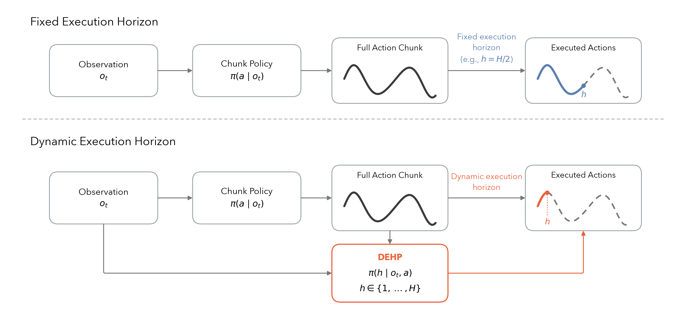
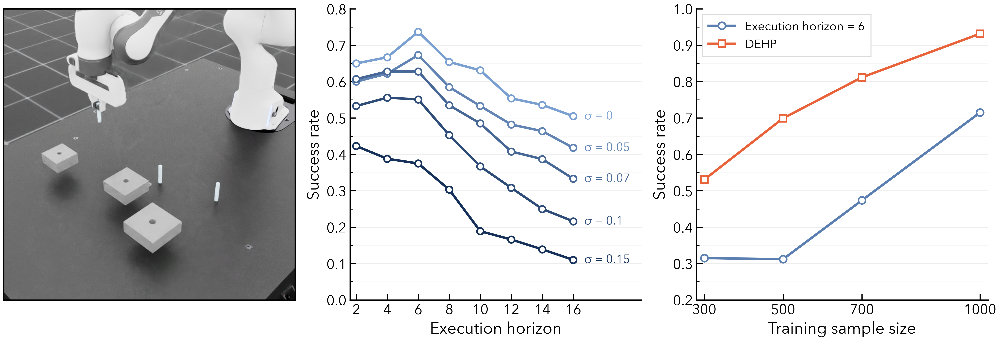
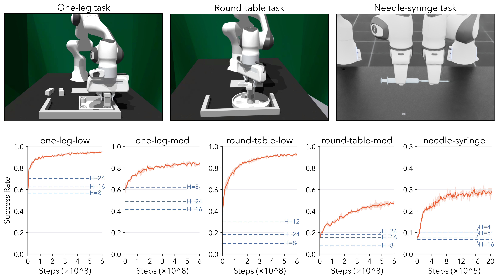

Action chunking has become a standard design in modern robot policies, where the policy predicts a sequence of actions and executes a fixed number of them before replanning. This fixed execution horizon creates a trade-off: long horizons improve smoothness and efficiency, while short horizons improve reactivity during fine-grained manipulation.
Dynamic Execution Horizon Prediction (DEHP) trains a lightweight execution-horizon head with online reinforcement learning while keeping the pretrained chunk policy completely frozen. The horizon head conditions on the current observation and the full predicted action chunk, then chooses how many actions to execute before the next policy query.
Across high-precision and long-horizon manipulation tasks, DEHP improves success over tuned fixed-horizon baselines. Qualitative analysis shows that it predicts shorter horizons during grasp alignment and insertion, and longer horizons during free-space motion.
DEHP leaves the base action-chunking policy fixed. At each decision point, the base policy predicts a length-H action chunk, and DEHP samples a categorical execution horizon h in {1, ..., H}. The robot executes only the first h actions and discards the rest before replanning.

The action generator is treated as a black box, making the method compatible with pretrained chunk policies such as Diffusion Policy.
The horizon head is optimized from sparse task return using a semi-Markov chunk-level PPO formulation.
Long horizons are used when motion is stable; short horizons are used when contact and alignment require frequent feedback.
In multi-stage peg insertion, DEHP improves overall success by 23.03% on average over fixed-horizon behavior cloning across action-noise levels, with the largest gains on the tightest insertion stage. The same adaptive horizon idea also improves performance as the amount of demonstration data increases.

We also show that dynamic execution horizons transfer beyond the multi-stage insertion setting. With the same frozen base policy, DEHP improves over the best fixed-horizon baselines on long-horizon FurnitureBench assembly tasks and on the high-precision bimanual needle-syringe task, indicating that learned replanning frequency is useful across both broad task progress and contact-sensitive manipulation.

These rollouts illustrate DEHP across fine-grained insertion and long-horizon assembly tasks. The learned execution horizon allows the robot to move efficiently through stable phases while replanning more frequently around contact-rich alignment and insertion.